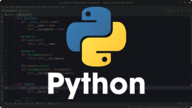
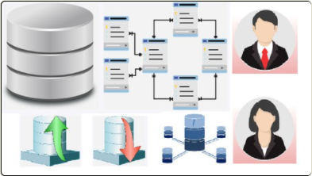

LISTA DE CURSOS
SQL sem desespero.Professora: Aline de Rosa Lima Descrição: Business Intelligence, SQL Server, MySQL, Oracle, T-SQL e PLSQL! Tudo aqui no curso de bancos de dados relacionais! |
|
|  |
Python para não esquecer.Professor: José Calebe de França Takehisa Descrição: Aprenda Python 3.8.5 com Expressões Lambdas, Iteradores, Geradores, Orientação a Objetos e muito mais! |
QA nenhum bug vai passar.Professor: Fernando Henrique Mariano Lozano Descrição: Become an expert QA Tester by mastering software testing, manual testing, SDLC, test plan and test case concepts. |
|
|  |
Modelagem de Dados, agora você aprende!Professora: Jackeline Mayara Cardoso Saez Descrição: Aprenda a modelar o seu Database, crie diagramas ER e dê seus primeiros passos como um Administrador de Banco de Dados! |